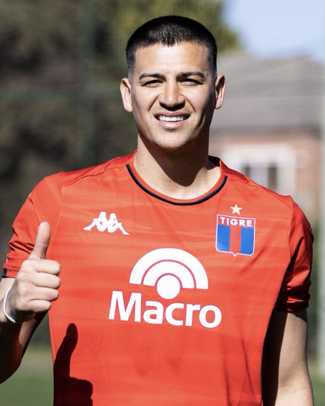

Darío Sarmiento

✍️ Darío Sarmiento es nueva incorporación del Club Atlético Tigre: El Matador adquirió el 50% de los derechos económicos del extremo llegado desde @ManCity y selló su contrato hasta diciembre de 2026.
Nahuel Banegas
📝 El lateral izquierdo de 27 años, Nahuel Banegas, se convirtió en nuevo refuerzo del Club Atlético Tigre. El mismo realizó las inferiores en nuestra institución hasta el año 2014.
⚽️ El jugador llega de San Martín de Tucumán a préstamo hasta diciembre de 2025, con cargo y con opción de compra.
-Ya el jugador conserva 1 Gol ⚽️ de su vuelta.
Florian Monzon
✍️ Florián Monzón es nuevo jugador del Matador de Victoria.
👉 El delantero llega a préstamo de Vélez Sarsfield hasta el 30 de junio de 2025, con cargo y con opción de compra.
-Ya el jugador conserva 4 Goles ⚽️.
Lolo Miranda
📝 El volante creativo Leonel Miranda llega en condición de libre y sella su vínculo con el Matador hasta diciembre de 2025.
Eric Ramírez
🇻🇪 Eric Ramírez se convirtió en nuevo jugador del Club Atlético Tigre. El delantero firmó su contrato por un año con nuestra institución. Llega a préstamo desde FC Dinamo de Kiev con cargo y con opción de compra.
-Ya el jugador ha convertido 1 Gol ⚽ en su primer partido.
Darío Sarmiento
✍️ Darío Sarmiento es nueva incorporación del Club Atlético Tigre: El Matador adquirió el 50% de los derechos económicos del extremo llegado desde @ManCity y selló su contrato hasta diciembre de 2026.
Romeo Benitez
✔ El extremo paraguayo Romeo Benítez es nuevo jugador del Matador de Victoria. Llega a préstamo por un año desde Athletico Paranaense con cargo y con opción de compra.
Alan Sosa
¡BIENVENIDO, ALAN! 🧤
👉 El arquero Alan Sosa es nuevo jugador del Club Atlético Tigre.
✍️ El Matador compró el 100% del pase a Gimnasia de Jujuy y firmó su contrato hasta diciembre de 2027.